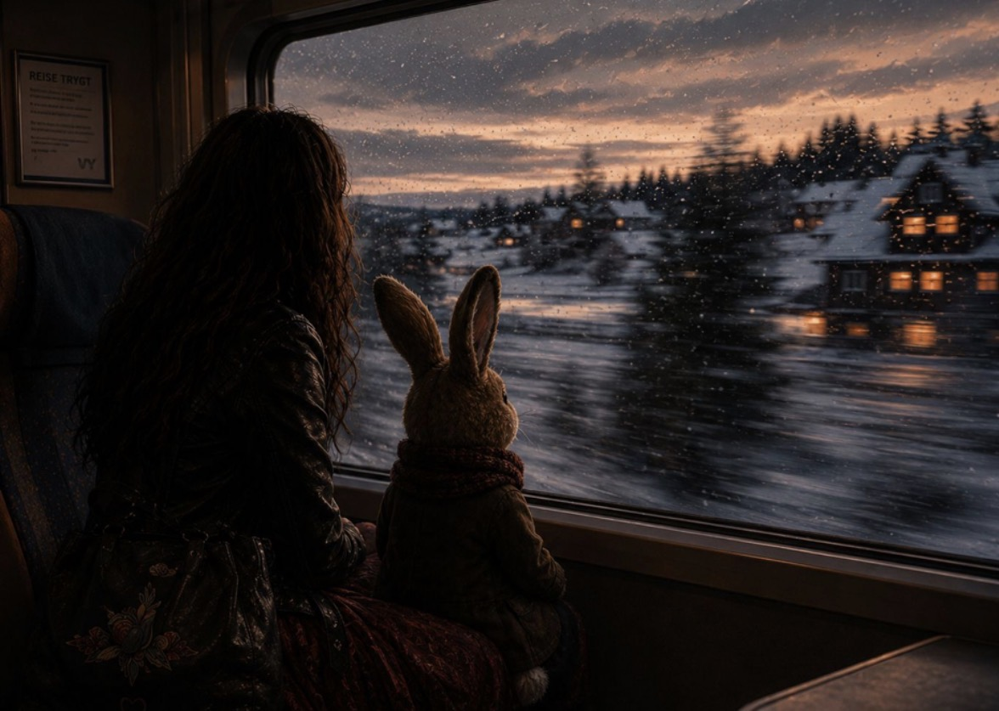

Sonder
Det er en egen følelse når du sitter alene på et busstopp i mørket og ser lysene, små glimt av noens liv der oppe i vinduene.
Når du sitter på et tog, alle menneskene som sitter så nært i en kupé og samtidig så langt unna deg, mens toget suser forbi hager og hus og skoler, og du får et lite glimt inn i et annet menneskes eksistens.
På engelsk har de et eget ord for det.
“The profound, sudden realization that every random passerby is living a life as vivid, complex, and chaotic as your own.”
Et ord for innsikten om at hvert menneske du passerer bærer på et liv like levende, stort og sammensatt som ditt eget.
Og jeg liker det ordet så godt.
Kanskje fordi det minner meg på noe jeg så lett glemmer når selvfølelsen min blir liten:
at jeg ikke er alene om å kjempe inni meg.
For vi ser jo hverandre så dårlig noen ganger.
Vi ser smilene, jobbene, kroppene, prestasjonene, fasadene og menneskene som virker så sikre på seg selv.
Men vi ser ikke alltid:
hvem som gråt på badet før de dro hjemmefra.
Hvem som føler seg uelsket.
Hvem som kjemper mot flasken.
Hvem som er redd for å være for mye.
Eller for lite.
Hvem som ligger våken om natta og føler seg fullstendig feil.
Jeg tror mange av oss går rundt og føler oss mindre verdt enn andre mennesker.
Som om alle andre har fått utdelt noe vi mangler.
Selvtillit og selvfølelse er jo heller ikke det samme.
Man kan være flink.
Morsom.
Pen.
Dyktig i jobben sin.
God til å snakke.
God til å prestere.
Og likevel føle seg innmari liten inni seg.
For selvtillit handler ofte om hva man gjør. Selvfølelse handler om hvem man tror man er verdt når man ikke gjør noen ting i det hele tatt.
Og kanskje er det nettopp derfor edring blir så sårbart.
For når alkoholen forsvant, tok den også med seg den kunstige tryggheten.
Den lånte selvfølelsen.
De timene der promillen gjorde jobben sin, og jeg følte meg nok. Som om jeg kunne takle alt. Tåle alt. Som om jeg ikke var så redd, ensom, håpløs eller verdiløs.
Ikke da.
Ikke de timene.
Enda jeg visste at følelsen når jeg våknet igjen var fylt av skam, og at alt som virket så selvfølgelig kvelden før, kjentes umulig og fullstendig håpløst morgenen etter.
Så når jeg nå står her, helt naken i meg selv, må jeg lære meg noe jeg aldri helt lærte før:
at jeg har verdi bare fordi jeg er til.
Og at jeg velger å gå nedover edringsstien helt selv.
For den stien er kronglete.
Noen dager sleper jeg beina etter meg.
Andre dager føles det som jeg hopper bortover stien.
Noen dager føles det som jeg har for tynn hud under beina, og stien kutter meg opp.
Andre dager sitter jeg bare stille og holder ut.
Noen dager står jeg bare der, og tar inn roen rundt meg.
Men jeg går ikke alene.
Det er det møtene minner meg på.
Og kanskje er det nettopp møtene, innsikten — sonder — som gjør at veien blir mulig:
at når mennesker som selv vet hvordan mørket kjennes, stopper opp og hjelper hverandre videre, heier, ler og gråter sammen — da skjer det noe magisk.
Ikke fordi noen av oss er bedre eller dårligere.
Men fordi vi vet hvor vondt det er å føle seg mindre verdt. Vi vet hvor vondt det er å leve i klørne på alkoholen. Hvor mye den tar. Hvor ensom og maktesløs den kampen er alene.
Kanskje er det jo nettopp det sonder handler om:
å forstå at vi aldri egentlig går alene.
At menneskene vi passerer bærer på egne kamper, egne savn og egne kriger.
Og kanskje handler ikke edring om å bli et bedre menneske.
Kanskje handler det bare om at vi sakte slutter å stå under oss selv. ❤️
